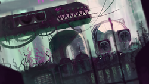
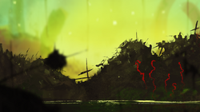
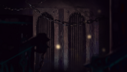
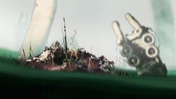
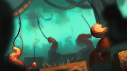

Outskirts
The Slugcat first finds themselves in the Outskirts region, so it naturally has less dangerous creatures than many of the other regions. Green and Pink lizards make this place their home, as well as some harmless creatures such as Batflys and Squidcadas.

Garbage Wastes
The Garbage Wastes are a dangerous place for the Slugcat. Many dangerous creatues such as Vultures and Brother Long Legs inhabit this region, in addition to the Lizards found previously in the Outskirts

Shaded Citadel
The Shaded Citadel is perhaps the most inhospitable region that the Slugcat travels in their journey. The area is nearly pitch-black, and there are plenty of deadly creatures lurking in every corner. Monster Kelp, Spiders, and Coalescipedes are just a few of the horrors found in this region.

Shoreline
The Shoreline is a vast region comprised of partially-submerged industrial structures separated by large bodies of water. Swimming such distances is already difficult for the Slugcat, but the Leeches, Salamanders, and Leviathans present make this area even more dangerous. The surface is not much safer, as there are few places to hide from the deadly White Lizards and King Vultures.

Farm Arrays
The Farm Arrays are an incredibly dangerous area for the Slugcat to traverse. Worm Grass is plentiful and can easily trap the Slugcat should they find themselves too close, while Yellow Lizards and Centipedes will relentlessly chase the Slugcat across the treacherous landscape.
